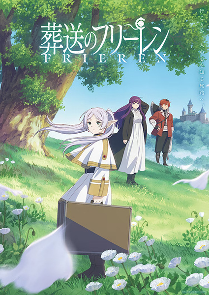
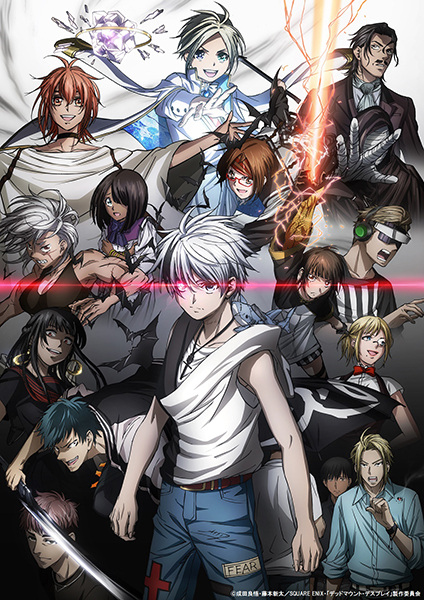

Konyaku Haki sareta Reijou wo Hirotta Ore ga, Ikenai Koto wo Oshiekomu
En la parte de atrás del bosque vive Allen Crawford, un mago que odia a la gente. Es temido por la gente que lo rodea y es llamado el "Señor de los Demonios". Un día, mientras vive su vida como ermitaño, encuentra a una joven llamada Charlotte Evans que se desmayó. Aunque era inocente, fue acusada de malas acciones, se rompió su compromiso y se vio obligada a huir de su país. Al oír esto, Allen recordó la amarga experiencia de ser traicionado por un grupo que una vez creyó que eran sus compañeros. Al escuchar la historia de la joven de 17 años, Allen decide: "La dejaré vivir en mi mansión y le enseñaré todo tipo de cosas malas."
Sousou no Frieren Frieren: Beyond Journey's End

La historia sigue a la maga elfa Frieren, una ex miembro del grupo de aventureros que derrotó al Rey Demonio y restauró la armonía en el mundo después de una búsqueda de diez años. En el pasado, el grupo heroico incluía a Frieren, el héroe humano Himmel, el guerrero enano Eisen y el sacerdote humano Heiter. Antes de separarse, observan juntos la Era Meteoros, una lluvia de meteoritos que ocurre una vez cada cincuenta años. Frieren acepta volver a verlos y ofrecerles una mejor vista la próxima vez que ocurra el evento celestial. Frieren luego parte y viaja por el mundo en busca del conocimiento mágico.
Dead Mount Death Play Part 2

Dios cadáver, un nigromante de gran poder en su mundo, lucha contra un héroe humano, pero resulta derrotado. Antes de desaparecer lanza un hechizo especial que traslada su alma a nuestro mundo. Esta ocupa el cuerpo de Polka Shinomiya, un adolescente japonés que acaba de ser asesinado.